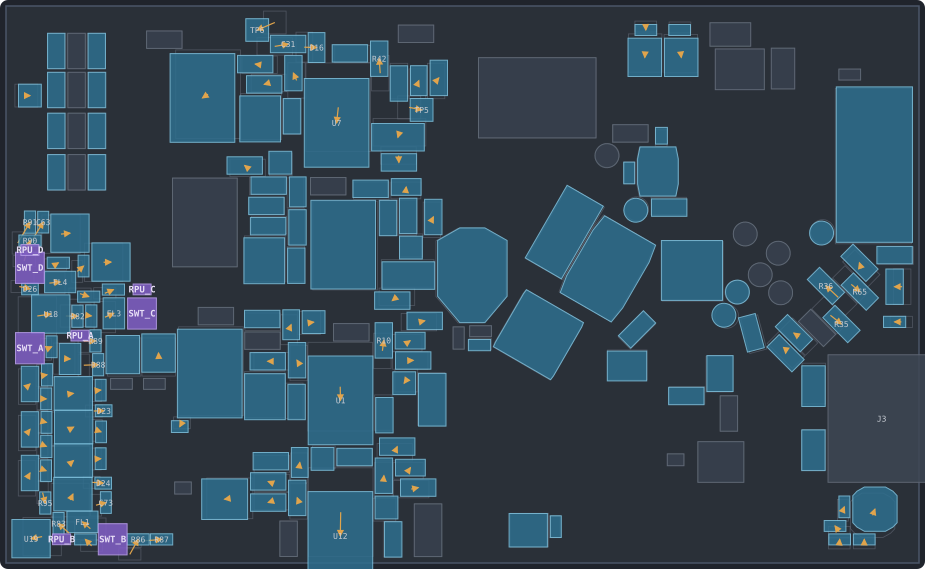
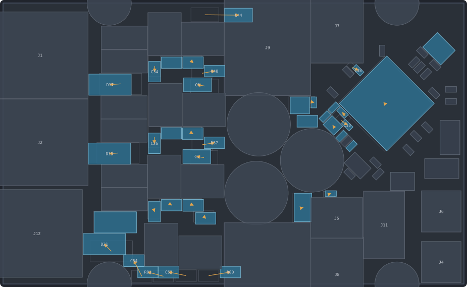
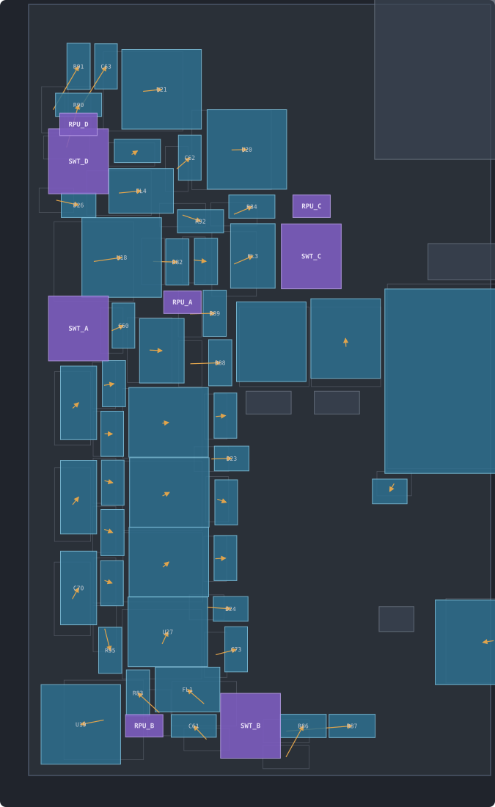
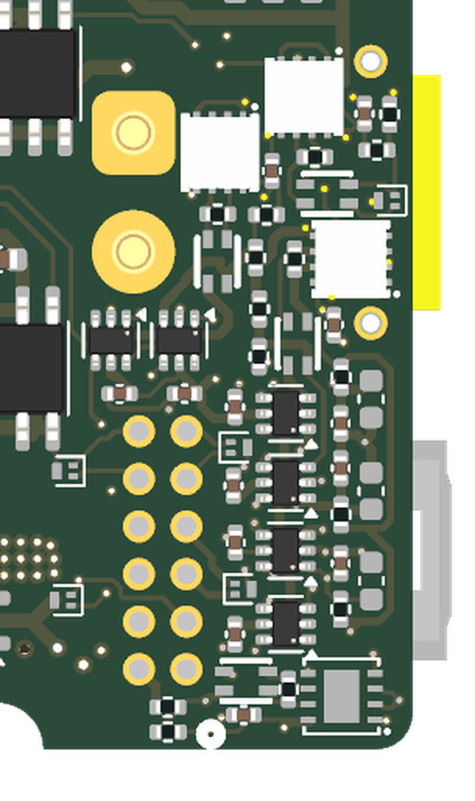
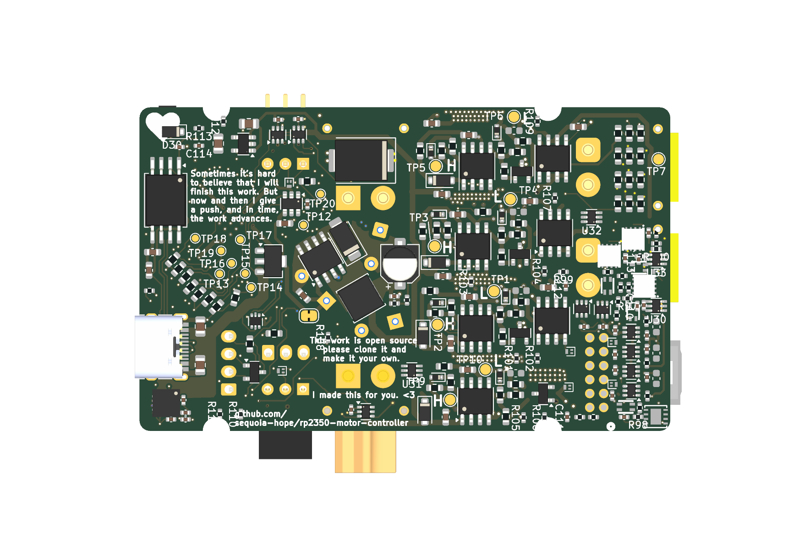

PCB Review & the "Energy Field" Spread
Layout analysis · courtyard clearance census · relaxation prototype with the four new termination switches · 2026-08-08
1 · Board vitals
| Metric | Value | Notes |
|---|---|---|
| Outline | 76.0 × 46.4 mm | edge connectors on left (phases, encoder), right (USB, SWD, serial, CAN), vertical XT30 power pass-through top/bottom |
| Stackup | 6 layers | F.Cu / In1 / In2 / In3 / In4 / B.Cu — In1 & In4 carry no tracks (planes); In2: 596 segs, In3: 828 segs |
| Footprints | 291 | 92 front / 199 back — the back is the dense side |
| Tracks | 3,984 segments, 5.16 m | widths: 0.16 mm ×817, 0.2 ×2132, 0.3–0.4 ×464, 0.6 ×443, 0.8–1.5 ×128 |
| Vias | 493 | 0.5/0.25 ×259, 0.7/0.3 ×158, 0.8/0.4 ×58, plus a few others |
| Zones | 34 | power pours + planes |

2 · DRC & hygiene
- OK Electrically clean: zero clearance violations, zero unconnected items across all 6 layers. Genuinely good state for a work-in-progress board.
- LOW 5 dangling track stubs, all on B.Cu: GND @(169.7, 112.1) and @(185.6, 127.0); Vdrive @(148.3, 105.5), @(156.1, 125.2), and a 1.2 mm stub @(149.2, 108.2). One-click cleanup (
Edit → Cleanup Tracks). - LOW 21 silk overlaps + 6 silk-over-copper — cosmetic; worth a pass before the next order so refdes stay legible.
- MED Courtyard truth vs DRC: KiCad's DRC reports zero courtyard overlaps, but boolean-intersecting the actual courtyard polygons finds real ones — C80 sits 1.39 mm² inside J9's courtyard, and the encoder-port TVS diodes D23/D24 overlap switches U22/U26/U27 by 0.13–0.21 mm². Tucked-under-connector parts may be deliberate, but check whether these were DRC-excluded on purpose (the project file has an exclusions section) — silent exclusions rot. Also: 11 footprints have no courtyard at all (all test points + SW1/SW2), so DRC can't police their spacing;
missing_courtyardis set to ignore.
3 · How tight is it, really — courtyard clearance census
Method: exact courtyard polygons pulled from KiCad via pcbnew, pairwise gaps computed
for every same-side pair (courtyard-less test points modeled as pad envelope + 0.2 mm). This is the
quantified version of your breathing-room instinct:
| Courtyard-to-courtyard gap | Pairs | Reading |
|---|---|---|
| Overlapping (< 0) | 14 | tucked TVS/switch pairs, C80 under J9, TP collisions |
| < 0.05 mm (touching) | 62 | courtyards already include ~0.25 mm margin each, so "touching" ≈ bodies 0.5 mm apart — buildable, but zero slack for rework tweezers, probes, or silk |
| < 0.10 mm | 134 | |
| < 0.25 mm | 270 | roughly half of all neighbor relationships on the board |
The congestion is not uniform — it lives in five named clusters:
- Gate-driver passive columns (x≈135–148, both sides): gate resistors, bootstrap diodes and test points woven between the FET rows — D15/TP5, R46/TP5, R31/TP3, TP10/U12 all at or below zero gap.
- RP2350 halo (the 135° cluster, front right): decoupling ring and the pull-resistor fans placed at 135° nearly body-to-body — R21/R22, R35/R36, R65/R66, C13/C14 vs Y1.
- Encoder corner (back left, next to J12): the switch fabric + TVS + chokes — D23/D24 literally overlapping the TS5A3159s.
- USB / crystal / flash block (front, under the RP2350): R50/R51/C30/L2, C4/U3.
- Bottom-edge passive row (back, y≈127): C53/C54/R80/R81/R87 pressed against the edge clearance.
4 · The energy-field jiggle — prototype results
I implemented your idea as a constrained relaxation and ran it on the real geometry: every courtyard gets a repulsive field targeting a 0.25 mm minimum gap, a weak spring pulls each part back toward its current position (so nothing wanders), and the shake runs for 400 iterations. Pinned and excluded from the field: every connector, the mounting holes, the eight FETs + six shunts + three bulk caps (their copper is the board's spine — moving them costs the most and gains the least). And per your ask, the four new TS5A3159 termination switches + four pull-up resistors are dropped in as new bodies near their transceivers, with no spring — they just hunt for space.


What the shake achieved
| Before | After | |
|---|---|---|
| Overlapping courtyard pairs (movable) | 14 | 2 real + a few new-part seams in the encoder corner |
| Pairs touching (< 0.05 mm) | 62 | handful, mostly pinned-vs-pinned (intentional tuck-unders) |
| New parts placed | — | 4 switches + 4 pull-ups, legal positions in the encoder corner |
| Parts moved > 0.05 mm | 203 of 291 — mean 0.57 mm, max 5.6 mm (C44) | |
| Track segments landing on a moved part | 2,412 of 3,984 (61%) — F.Cu 526, B.Cu 1135, In2 285, In3 466 | |
What I'd actually do — cluster-scoped shakes
The census says congestion lives in five clusters. Running the same field one cluster at a time (freeze the rest of the board, relax only the cluster, re-route just its local nets with the shove router) gets nearly all the benefit at a fraction of the re-route cost. Concretely, in priority order:
- Encoder corner — you're opening this area anyway to add the termination switches (below). Shake radius ~15 mm, maybe 40 parts, mostly short 0.16/0.2 mm tracks on B.Cu. An evening.
- Gate-driver columns — moves are small (0.2–0.5 mm), tracks are short stubs between driver, gate resistor, and FET. Do it per half-bridge.
- Bottom-edge passive row — five parts sliding along the edge; trivial re-route.
- RP2350 halo — leave it. The 135° packing is tight but electrically good (short decoupling loops); extra gap here buys assembly comfort but costs impedance. Only touch the R21/R22-style pull-resistor fans if the fab complains.
- USB/crystal cluster — leave unless you re-spin that region; crystal caps want to stay hugged to Y1.
5 · Where the four termination switches land
The relaxation placed the new parts in real gaps in the encoder corner (back side). Final positions from the run — treat as placement suggestions, not gospel:
| Part | Position (mm) | Next to | Notes |
|---|---|---|---|
| SWT_A + RPU_A | (114.5, 110.5) / (118.6, 109.4) | U18, R88/R89 | clean fit beside the channel-A transceiver |
| SWT_B + RPU_B | (121.4, 126.4) / (117.1, 126.4) | U19, FL1 | slots into the row above J12 |
| SWT_C + RPU_C | (123.8, 107.6) / (123.8, 105.6) | U20, R84 | easiest corner — real free area here |
| SWT_D + RPU_D | (114.5, 103.8) / (114.5, 102.3) | U21, FL4, R90/R91 | tight — the solver left ~0.3 mm seams against R90 and the board-edge margin; this pocket needs the cluster shake (or push FL4/R92 right 1 mm) before it's comfortable |


Routing note for the switches: the A–B pair stubs from choke to transceiver are short and already differential; inserting the switch in series with each 100 Ω keeps the stub geometry — place the switch so its COM/NO pins bridge the existing R82–R85 pads' net with minimal added stub length. TP20 (GPIO38) is at (129.5-ish, near the buck side of the encoder corner) and can pick up the shared TERM enable with one 0.16 mm track on B.Cu.
6 · Verdict on the concept
- YES The physics of your idea works, and the prototype proves it on
the real board: courtyard fields + position springs + pinned interfaces converge in a few hundred
iterations, resolve the genuine overlaps, and find legal homes for new parts. I kept the solver —
it reads the actual
.kicad_pcband can write moves back viapcbnewwhenever you want to apply a cluster. - BUT Globally it's a re-layout in disguise: 61% of segments would need re-routing, and your edge interfaces (phase XT30s, encoder Molex, USB, SWD/serial, daisy-chain headers, mounting holes) rightly can't move, so the field piles parts up against the pinned zones (the bottom-edge row showed exactly this).
- DO Cluster-scoped shakes, starting with the encoder corner since the termination-switch rework opens it anyway. Say the word and I'll apply the encoder-corner moves to a branch copy of the board file and leave the re-route to you (or take a swing at re-routing the 0.2 mm stubs myself and let you review in KiCad).
- ALSO Give DRC its teeth back while you're in here: add courtyards to the 11 footprints missing them, resolve/annotate the courtyard exclusions, sweep the 5 dangling stubs and the silk overlaps. Then "does it breathe" becomes a checkbox instead of an investigation.
7 · Applied: rev-B changes (2026-08-08, branch rev-b-fixes)
Everything above was subsequently applied. On branch rev-b-fixes
(seven commits from the main baseline): TVS/FET voltage-rating fixes, the switched
termination + pull-ups, boot-state pull-downs, WS2812 supply diode, DNP hardware E-stop, the
board-side net changes, all 28 new footprints placed, and the encoder-corner cluster shake (49 parts
moved per the relaxation). Firmware drives every mux control to safe defaults at boot and closes the
termination for differential encoders (TERM_EN = GPIO38).

LCSC-TBD (SMAJ64A,
SMDJ60A, BSC040N10NS5, 100k 0402, Q6) need picking at order time.
8 · Jiggle v2 first light: connectivity-preserving relaxation (2026-08-09)
Instead of hand-routing the 214 airwires, we built the tool proposed after the rip:
recover the deleted corner copper from the pre-rip board (git 2238aca), bind
trace endpoints to their pads, and drag them to the rev-B positions under constraint
projection — traces and vias as elastic objects, per the routing
research. Pipeline in hardware/tools/jiggle2/:
graft.py (diff pre-rip vs current copper → graph: 730 segments, 44 vias, 276
pad-bound endpoints) → solve.py (PBD relaxation, 0.18 mm rule model) →
emit.py (writes rp2350_driver_jiggle2.kicad_pcb, refills zones)
→ drcloop.py (real kicad-cli DRC as referee; withdraws any
emitted copper implicated in a new violation, re-emits, repeats).
Result (work copy, never the real board): airwires 214 → 189, violations 130 → 130 — strictly DRC-neutral by construction: the referee loop withdrew ~130 objects until zero introduced violations remained. 535 of 722 recovered chains survived the solver's own classifier; the referee then pruned to what real DRC accepts.
What we learned, honestly: the interesting findings were in the nets, not
the geometry. The graft exposed that rev-B split four pre-rip nets
(Net-(U18…U21-A)) into /TERM_x_R + /ENC_x_TRX_A
— the termination switches sit where one net used to be — so the old direct copper is
topologically obsolete there and the tool now cuts it at the split rather than re-shorting
the switch. The dominant residue is real: new parts (R98/R100, C110/C113, the four switches,
D23/D27) were placed on top of old routes; gentle deformation can't dig a trace out
from under a pad field, and single-obstacle detours ("wrap") just plow into neighboring pads
at this density. Those chains stay withheld as airwires. Next lever if we push further:
shortest homotopic path through the union of inflated obstacles (visibility graph
per contested chain, Maley-style), plus a board-edge constraint the first solver lacked, and
layer-hopping for the under-part crossings.
8b · Control experiment: no new parts, referee-only iterations (2026-08-09)
To isolate variables we re-ran the pipeline with the 28 rev-B footprints removed everywhere
(JIGGLE2_VARIANT=nonew: obstacles, base board, and DRC baseline all computed without
them). Two findings. First, the new parts are most of the problem: the baseline
board without them has only 46 violations / 149 airwires (vs 130 / 214), and the solver's residual
drops from 485 to 269 — the rest of the contested copper is the moved parts' own pad fields.
Second, emitting all relaxed copper recovers nearly everything
(149 → 18 airwires) at the cost of 283 real violations — and the real DRC count almost
exactly matches the solver's internal residual, so the model is calibrated.
The iteration question — answered. With PathFinder-style minimal withdrawal (one most-implicated object per violation per round, referee veto separate from the classifier's opinion), the loop converges monotonically and never breaks the board: 285 → 15 → 3 → 2 → 0 new violations over five rounds, ending at 45 violations (one better than baseline) and 124 airwires (25 recovered net of withdrawals). The board-edge clamp added this round eliminated the copper-edge violation class the first run suffered. The gap between 18 airwires (emit-everything) and 124 (DRC-neutral) is the honest measure of what still needs a real router: ~270 copper objects, concentrated where the 49 moved parts' pad fields overlap old approach traces — the homotopic-reroute lever from the research page, not more force iterations.
8c · Homotopy invariant: the field never changed topology (2026-08-09)
The Cabello check proposed on the research page is now implemented
(hardware/tools/jiggle2/homotopy.py). For each of the 722 solved chains it closes a loop —
pre-rip segment, endpoint-drag connectors (exact for anchored nodes, which lerp on straight lines),
reversed solved polyline — and reduces its crossing word against a system of disjoint vertical rays,
one per pinned obstacle (452 punctures: other-net pads of the 242 unmoved parts, plus kept
vias; drilled pads and vias puncture all four copper layers). Empty reduced word ⇔ the chain is
homotopic to its original: shape changed, topology kept.
Result: 722/722 chains pass in both variants — the first-light run and the
referee-iterated nonew run — despite genuine motion (max deflection 2.9 mm from the
original segment, ~685 chains moved >0.1 mm). The check is not vacuous: a synthetic selftest
covers the crossing-word cases, and an end-to-end mutation (one chain lassoed around a pad field in
solution.json) is flagged as exactly one topology change, naming the enclosed pads. So the
PBD field deforms copper but provably never pulls a trace across a fixed obstacle — "keeps them
connected" now also means "kept them equivalent." Withdrawn copper and moved-part pad fields remain
outside the invariant's scope; those are the honest domain of the reroute lever, not relaxation.
8d · The homotopic reroute lever, pulled (2026-08-09)
Section 8b ended with ~270 referee-withdrawn objects that no amount of force iteration would fix —
moved pad fields sitting on old routes need new geometry, not deformation. Stage 6
(hardware/tools/jiggle2/reroute.py) is that re-plan, deliberately narrow: the withdrawn
chains form 112 single-net clusters (max 11 edges, mostly encoder nets at the relaxed corner); each
cluster's terminals — pad-bound anchors, junctions shared with kept copper, and its withdrawn vias
after relocation to the nearest legal spot — are reconnected by grid A* (0.1 mm, clearance + hole
+ board-edge model) over everything already on the board. Where the cluster's original path between
two terminals is known and single-layer, the search runs in the covering space: the A* state
carries the reduced crossing word rel the pinned punctures of §8c, so only a path in the same homotopy
class as the pre-rip route is accepted — Maley's regime, fixed topology with new geometry. No new
objects: vias may move, chains get new polylines, kicad DRC stays the referee.
Result: 149 baseline airwires → 71, DRC-neutral at 44 violations — two better than the 46-violation baseline. The progression over the whole experiment: baseline 46/149 → relaxation alone 45/124 → relaxation + homotopic reroute 44/71. The router placed 87 paths (64 class-constrained, 21 free-class attach paths, 2 class-changed fallbacks) and relocated 27 of 32 withdrawn vias; the referee then withdrew 5 paths and 10 vias over ten monotone rounds, leaving 82 rerouted chains — 62 provably in their original homotopy class, one surviving class change. The §8c invariant still holds: 722/722 relaxed chains homotopic to their pre-rip originals. What remains in the 71: sixteen clusters with fewer than two reachable terminals, 37 terminals A* couldn't reach at rule clearance, and 5 vias with no legal spot within 2 mm — the honest residual that needs topology changes (new via hops) or a human, not a better field.
9 · The morph: rework without the rip (2026-08-09)
Sequoia's reframe: the shipped board (2238aca) is 0 violations / 0 airwires
under its own project rules — every airwire in sections 8–8d was a wound inflicted by the rip-based
rework, not ground truth. The right process is a morph: start from the shipped board and
nudge toward the rev-B placement, every checkpoint fully routed and no worse than shipped. Pipeline:
JIGGLE2_VARIANT=morph graft.py → solve.py --snapshots 12 → morph.py — thirteen
DRC-gated boards in data_morph/morph/, parts and copper riding the same smoothstep.
Six artifact classes had to die before the physics was visible, each caught by the kicad DRC gate: (1) the obstacle field must be time-dependent — parts at their lerped positions, no rev-B ghosts (ghost fields deformed even the s=0 state); (2) the drag set must include kept copper on moving pads and everything in the pads' swept corridors, so copper flows around parts (+163 objects); (3) drag endpoints junctioning into static copper get pinned (53); (4) shipped boards are routed at the clearance limit and the model carries ~10 µm biases — 446 pairs are grandfathered at their shipped distance, later corrected to hold that distance as prescribed motion approaches; (5) checkpoint s=0 is captured pristine; (6) rubber-band smoothing is off in morph mode — beautification straightens shipped geometry into violations (this one artifact accounted for 149 of 168 early-step violations). First-step violations fell 517 → 168 → 19 → 7 across these fixes; the s=0 roundtrip is identity up to zone-refill drift (8 NPTH/pour artifacts, 1 pour island, all baselined).
The honest frontier: connectivity never breaks along the trajectory, but
violations grow smoothly — 7 at s=0.02 (four of them courtyard contacts between parts that ship
abutting: any simultaneous straight-line motion overlaps them), 42 at s=0.26, 109 at s=0.50, 209 at
s=1. The corner is at-limit dense: moving a pad 40 µm wedges copper whose retreat side is
itself at-limit. Deformation alone cannot make this trajectory green — which is the literature's
prediction, not a defeat: the next levers are scheduled part motion (stagger the abutting
pairs instead of one global alpha) and atomic mid-flight reroutes where a cut saturates —
Maley's cut-capacity oracle, the research page's open item, now with an exact worklist. The rip-based
recovery chain (§8–8d) remains the calibrated fallback, and its nudge stage
(nudge.py: additive batches, component-granular, never worse than baseline at any
checkpoint) is the machinery the morph's final new-parts phase will reuse.